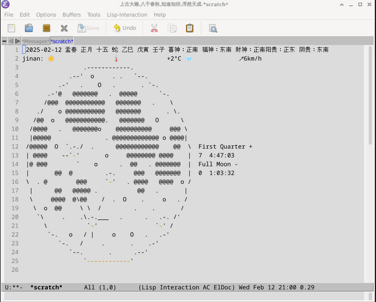

emacs一键插入-日期,农历,月相,万年历
1. wttr.in天气信息的API调取
wttr.in的地址 https://github.com/chubin/wttr.in
1: ;;添加济南天气的操作 2: (defun insert-weather () 3: (interactive) 4: (insert (shell-command-to-string "curl wttr.in/jinan?format=4 2> /dev/null"))) 5: 6: (global-set-key (kbd "C-c m w") #'insert-weather)
2. pyphoon月相的调取
pyphoon的地址 https://github.com/chubin/pyphoon
1: ;;添加月相的操作 2: (defun insert-pyphoon () 3: (interactive) 4: (insert (shell-command-to-string "source ~/mypython/bin/activate && pyphoon"))) 5: 6: (global-set-key (kbd "C-c m o") #'insert-pyphoon)
3. 农历API调取地址
3.1. 先写一个shellscript来调取农历API地址中的字符串
例如这个效果: "2025-02-11 孟春 正月 十四 蛇 乙巳 戊寅 辛亥 喜神：西南 福神：西北 财神：正东阳贵：东北 阴贵：正南 " 配置文件如下:
1: #!/bin/bash 2: 3: # 获取当前日期 4: current_date=$(date +"%Y-%m-%d") 5: 6: # 使用 wget 命令获取当天的农历日期，并且静默过程 7: #response=$(wget -qO- "https://www.36jxs.com/api/Commonweal/almanac?sun=${current_date}")#20250926原网址不用了崩溃了.修改 8: response=$(wget -qO- "https://cn.apihz.cn/api/time/getday.php?id=10008463&key=08727f4803a7dc3714463a897a3a1989") 9: 10: # 解析农历日期 11: #lunar_GregorianDateTime=$(echo $response | grep -o '"GregorianDateTime":"[^"]*' | grep -o '[^"]*$') 12: #lunar_month=$(echo $response | grep -o '"LMonth":"[^"]*' | grep -o '[^"]*$') 13: #lunar_day=$(echo $response | grep -o '"LDay":"[^"]*' | grep -o '[^"]*$') 14: #lunar_year=$(echo $response | grep -o '"LYear":"[^"]*' | grep -o '[^"]*$') 15: #lunar_tiangany=$(echo $response | grep -o '"TianGanDiZhiYear":"[^"]*' | grep -o '[^"]*$') 16: #lunar_tianganm=$(echo $response | grep -o '"TianGanDiZhiMonth":"[^"]*' | grep -o '[^"]*$') 17: #lunar_tiangand=$(echo $response | grep -o '"TianGanDiZhiDay":"[^"]*' | grep -o '[^"]*$') 18: #lunar_shenwei=$(echo $response | grep -o '"ShenWei":"[^"]*' | grep -o '[^"]*$') 19: #lunar_monthname=$(echo $response | grep -o '"LMonthName":"[^"]*' | grep -o '[^"]*$') 20: 21: #echo " $lunar_GregorianDateTime $lunar_monthname $lunar_month $lunar_day $lunar_year $lunar_tiangany $lunar_tianganm $lunar_tiangand $lunar_shenwei" 22: 23: 24: lunar_nnian=$(echo $response | grep -o '"nnian":"[^"]*' | grep -o '[^"]*$') 25: lunar_nyue=$(echo $response | grep -o '"nyue":"[^"]*' | grep -o '[^"]*$') 26: lunar_nri=$(echo $response | grep -o '"nri":"[^"]*' | grep -o '[^"]*$') 27: lunar_shengxiao=$(echo $response | grep -o '"shengxiao":"[^"]*' | grep -o '[^"]*$') 28: lunar_ganzhinian=$(echo $response | grep -o '"ganzhinian":"[^"]*' | grep -o '[^"]*$') 29: lunar_ganzhiyue=$(echo $response | grep -o '"ganzhiyue":"[^"]*' | grep -o '[^"]*$') 30: lunar_ganzhiri=$(echo $response | grep -o '"ganzhiri":"[^"]*' | grep -o '[^"]*$') 31: lunar_yuexiang=$(echo $response | grep -o '"YUEXIANG":"[^"]*' | grep -o '[^"]*$') 32: lunar_jieqimsg=$(echo $response | grep -o '"jieqimsg":"[^"]*' | grep -o '[^"]*$') 33: 34: 35: echo "<$lunar_nnian-$lunar_nyue-$lunar_nri $lunar_shengxiao> <$lunar_ganzhinian-$lunar_ganzhiyue-$lunar_ganzhiri> $lunar_yuexiang $lunar_jieqimsg "
3.2. 这个效果" <孟春-正月-十四 蛇 乙巳-戊寅-辛亥> "
配置文件如下:
1: #!/bin/bash 2: 3: # 获取当前日期 4: current_date=$(date +"%Y-%m-%d") 5: 6: # 使用 wget 命令获取当天的农历日期，并且静默过程 7: #response=$(wget -qO- "https://www.36jxs.com/api/Commonweal/almanac?sun=${current_date}")#20250926原网址不用了崩溃了.修改 8: response=$(wget -qO- "https://cn.apihz.cn/api/time/getday.php?id=10008463&key=08727f4803a7dc3714463a897a3a1989") 9: 10: # 解析农历日期,原网址不能用了还是不错的. 11: #lunar_GregorianDateTime=$(echo $response | grep -o '"GregorianDateTime":"[^"]*' | grep -o '[^"]*$') 12: #lunar_month=$(echo $response | grep -o '"LMonth":"[^"]*' | grep -o '[^"]*$') 13: #lunar_day=$(echo $response | grep -o '"LDay":"[^"]*' | grep -o '[^"]*$') 14: #lunar_year=$(echo $response | grep -o '"LYear":"[^"]*' | grep -o '[^"]*$') 15: #lunar_tiangany=$(echo $response | grep -o '"TianGanDiZhiYear":"[^"]*' | grep -o '[^"]*$') 16: #lunar_tianganm=$(echo $response | grep -o '"TianGanDiZhiMonth":"[^"]*' | grep -o '[^"]*$') 17: #lunar_tiangand=$(echo $response | grep -o '"TianGanDiZhiDay":"[^"]*' | grep -o '[^"]*$') 18: #lunar_shenwei=$(echo $response | grep -o '"ShenWei":"[^"]*' | grep -o '[^"]*$') 19: #lunar_monthname=$(echo $response | grep -o '"LMonthName":"[^"]*' | grep -o '[^"]*$') 20: 21: #echo " $lunar_GregorianDateTime $lunar_monthname $lunar_month $lunar_day $lunar_year $lunar_tiangany $lunar_tianganm $lunar_tiangand $lunar_shenwei" 22: 23: 24: lunar_jieqi=$(echo $response | grep -o '"jieqi":"[^"]*' | grep -o '[^"]*$') 25: lunar_nyue=$(echo $response | grep -o '"nyue":"[^"]*' | grep -o '[^"]*$') 26: lunar_nri=$(echo $response | grep -o '"nri":"[^"]*' | grep -o '[^"]*$') 27: lunar_shengxiao=$(echo $response | grep -o '"shengxiao":"[^"]*' | grep -o '[^"]*$') 28: lunar_tiangannian=$(echo $response | grep -o '"ganzhinian":"[^"]*' | grep -o '[^"]*$') 29: lunar_tianganyue=$(echo $response | grep -o '"ganzhiyue":"[^"]*' | grep -o '[^"]*$') 30: lunar_tianganri=$(echo $response | grep -o '"ganzhiri":"[^"]*' | grep -o '[^"]*$') 31: lunar_yuexiang=$(echo $response | grep -o '"YUEXIANG":"[^"]*' | grep -o '[^"]*$') 32: 33: 34: echo " <$lunar_jieqi $lunar_nyue-$lunar_nri $lunar_shengxiao $lunar_tiangannian-$lunar_tianganyue-$lunar_tianganri $lunar_yuexiang>"
3.3. 然后就能用elisp调用这两个文件
1: (defun insert-nongli () 2: (interactive) 3: (insert (shell-command-to-string "~/.emacs.d/loadfile/nongli.sh"))) 4: 5: (global-set-key (kbd "C-c m n") #'insert-nongli) 6: 7: (defun insert-nonglijian () 8: (interactive) 9: (insert (shell-command-to-string "~/.emacs.d/loadfile/nonglijian.sh"))) 10: 11: (global-set-key (kbd "C-c m j") #'insert-nonglijian) 12:
4. 还可以在已启动的那个*scratch*页面显示出来,虽然没什么用,但是总比那个啥信息都没有的强.
将以下代码添加到你的 Emacs 配置文件中：
1: ;; 在 Emacs 启动时清空 *scratch* 缓冲区并插入特定函数代码 2: (setq initial-scratch-message "") ; 清空初始的 *scratch* 消息 3: (with-current-buffer "*scratch*" 4: ;(let ((result1 (insert-weather))) 5: ;(insert (format " %s\n" result1))) 6: (call-interactively 'insert-nongli) 7: (call-interactively 'insert-weather) 8: (call-interactively 'insert-pyphoon) 9: )
4.1. 效果

4.2. 设置的快捷键,可以随意调取
C-c m o 插入月相(刚好是满月)
.------------. .--' o . . `--. .-' . O . . `-. -'@ @@@@@@@ . @@@@@ `-. /@@@ @@@@@@@@@@@ @@@@@@@ . \ / o @@@@@@@@@@@ @@@@@@@ . \. @@ o @@@@@@@@@@@. @@@@@@@ O \ @@@@ . @@@@@@@o @@@@@@@@@@ @@@ \ |@@@@@ . @@@@@@@@@@@@@ o @@@@| @@@@@ O `.-./ . @@@@@@@@@@@@ @@ \ First Quarter + @@@@ --`-' o @@@@@@@@ @@@@ | 6 5:40:26 |@ @@@ ` o . @@ . @@@@@@@ | Full Moon - @@ @ .-. @@@ @@@@@@@ | 1 0:10:09 . @ @@@ `-' . @@@@ @@@@ o / | @@ @@@@@ . @@ . | @@@@ @\@@ / . O . o . / o @@ \ \ / . . / \ . .\.-.___ . . .-. /' \ `-' `-' / -. o / | o O . .-' `-. / . . .-' `--. . .--' `------------'C-c m w 插入济南的天气
jinan: 🌦 🌡️+7°C 🌬️↗8km/h
C-c m n 插入农历
2025-02-11 孟春 正月 十四 蛇 乙巳 戊寅 辛亥 喜神：西南 福神：西北 财神：正东阳贵：东北 阴贵：正南
C-c m j 简介版本的农历
<孟春-正月-十四 蛇 乙巳-戊寅-辛亥>
C-c m y 显示出当年时间已经流逝的百分比
[/// ] 11%
5. 配置文件
1: ;;;;;;;;;;;;;;;;;;;;;;;;;;;;;;;;;;;;;;;;;;;;;;;;;;;;;;;;;;;;;;;;;;;;;;;;;;; 2: ;; -*- coding: utf-8; lexical-binding: t -*- 3: ;;pengshao-openweather.el---自动插入天气的教程 4: ;;<2025-02-08/Saturday 19:32:10> 5: ;;;;;;;;;;;;;;;;;;;;;;;;;;;;;;;;;;;;;;;;;;;;;;;;;;;;;;;;;;;;;;;;;;;;;;;;;;; 6: 7: ;;添加济南天气的操作 8: (defun insert-weather () 9: (interactive) 10: (insert (shell-command-to-string "curl wttr.in/颜庄@36.0711,117.4628?format=4 2> /dev/null"))) 11: 12: 13: (global-set-key (kbd "C-c m w") #'insert-weather) 14: 15: 16: ;;添加月相的操作 17: (defun insert-pyphoon () 18: (interactive) 19: (insert (shell-command-to-string "source ~/mypython/bin/activate && pyphoon"))) 20: 21: (global-set-key (kbd "C-c m o") #'insert-pyphoon) 22: 23: 24: (defun insert-nongli () 25: (interactive) 26: (insert (shell-command-to-string "~/.emacs.d/loadfile/nongli.sh"))) 27: 28: (global-set-key (kbd "C-c m n") #'insert-nongli) 29: 30: (defun insert-nonglijian () 31: (interactive) 32: (insert (shell-command-to-string "~/.emacs.d/loadfile/nonglijian.sh"))) 33: 34: (global-set-key (kbd "C-c m j") #'insert-nonglijian) 35: 36: 37: ;; 定义一个函数来插入 MOON-TODAY drawer 并调用 insert-pyphoon 函数 38: (defun insert-moon-today-drawer-with-pyphoon () 39: "Insert a MOON-TODAY drawer at the current line and call insert-pyphoon inside it." 40: (interactive) 41: (insert ":MOON-TODAY:\n") 42: (call-interactively 'insert-pyphoon) 43: (insert ":END:\n")) 44: 45: ;; 绑定快捷键 C-c m c 到 insert-moon-today-drawer-with-pyphoon 函数 46: (add-hook 'org-mode-hook 47: (lambda () 48: (local-set-key (kbd "C-c m c") 'insert-moon-today-drawer-with-pyphoon))) 49: 50: (provide 'pengshao-openweather)